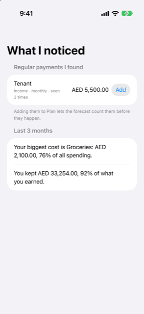

Guide › Insights
What I noticed
Patterns Damla finds in your history.
What I noticed is the page in Insights where Damla reports the patterns it has found in your own history: payments and income that repeat, and how the last three months went. In one tap you can turn what you already do into recurring entries, instead of typing each one by hand.

When to use it
- You have been recording for a while and want Damla to find the regular payments you have not entered yet.
- Something keeps appearing in your history — a subscription, a fee, a salary — and you want the forecast to count it before it happens.
- You want a short summary of the last three months: your biggest cost, and whether you spent more than you earned.
Step by step
- Open the Insights tab and tap What I noticed.
- Read the section Regular payments I found. Each row names the payee, and under it a line that says whether Damla read it as Income or as a Bill, how often it repeats, and how many times it has been seen.
- Look at the amount on the right of each row. It is a single figure, or a range when the amount varies from one time to the next.
- Tap Add on the row you recognise. The entry is added to your recurring items, and from then on the forecast counts it before it happens.
The section ends with the line "Adding them to Plan lets the forecast count them before they happen."
When there is nothing to report, the page says so: "Nothing new. Import more history and I will look for regular payments and income." Regular rows appear as you record and import more.
The last three months
Below the list, a section headed Last 3 months sums up that stretch of your books. It names your biggest cost, with its total and its share of all spending as a percentage. It then adds one of two lines: either that you spent more than you earned, with the difference, or — when you earned something in that period — what you kept, and what share of what you earned that was.
This section appears once your spending has at least one category. It reads the whole three months, from the start of the month before last to today, not this month alone, so one unusual week does not distort the picture.
Good to know
- Nothing is added on its own. A pattern becomes a recurring entry only when you tap Add. You choose each one.
- A row you leave alone shows again. There is no button that hides a pattern, so it comes back the next time you open the page.
- A pattern has to repeat. Damla suggests something only when it has seen it three times or more, at even gaps — monthly, weekly, or every 2 weeks — with the last one recent enough that it still looks like it is going on. Anything you already have under Income & bills is not offered again.
- A range means an estimate. When the amount of a repeating payment varies, Damla shows the spread it saw. Check it against your own records before you add it.
- Added entries live in Plan. You can change or remove them later under Plan, Income & bills, like any other recurring entry.
- The summary follows your books. Both parts are worked out from what you have recorded. Correcting a transaction in Activity changes what this page reports.
- This page reports what your history shows, in figures and estimates. It gives information, not financial advice.
Related
Something unclear or missing? Write to support@raveniq.ai and say which page.